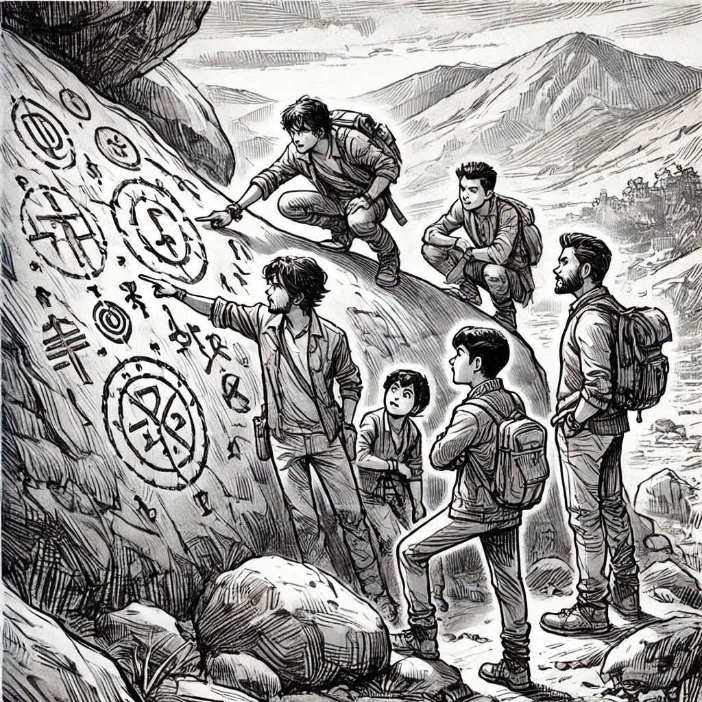

Rishikesh Revelry: The Kuari Pass Chronicles
Continue the thrilling journey of five friends as they embark on an epic trek through the Himalayas, facing new challenges, uncovering mysteries, and deepening their unbreakable bonds of friendship.
Page 7: The Early Departure

As the sun starts to rise, Aarush, Vihaan, Rudra, Kiaan, and Yuvan pack their bags, feeling tired but excited. The smell of fresh chai fills the air as they head to the bus station. Vihaan rubs his eyes and yawns.
“Who needs sleep when you’re so pumped?” Vihaan jokes, making everyone laugh.
“I need my sleep,” Rudra replies, sipping his chai. “But at least we’re on time.”
The bus arrives with a loud screech. They all get on, their bags packed and hearts excited. The bus is colorful with decorations and plays lively Bollywood songs as it starts moving.
Page 8: The Winding Roads

The bus travels along narrow mountain roads, showing amazing views of green valleys and beautiful waterfalls. Kiaan starts talking to Anika, a seasoned trekker, who shares stories of her adventures.
“Mountains show you who you really are,” Anika says thoughtfully.
Yuvan listens carefully, drawing the changing scenery in his sketchbook. Aarush points to a snowy peak in the distance.
“That’s our destination. Ready to reach the top?”
Vihaan smiles. “As long as the mountain doesn't come to meet us!”
The friends laugh, feeling more energized for the journey ahead.
Page 9: Joshimath Arrival
By late afternoon, they reach Joshimath, the gateway to Kuari Pass. The town is surrounded by tall mountains, with busy streets full of trekkers and locals. Rudra suggests they buy some last-minute supplies.
“We need more energy bars and some instant noodles,” Rudra advises.
“And don’t forget the local sweets!” Vihaan adds, eyeing a nearby sweet shop.
They split up to explore the town. Kiaan bargains with a shopkeeper for a woolen cap, while Aarush and Yuvan look at trekking gear. Rudra checks the map to plan their route.
Page 10: Campfire Tales
As evening comes, they set up camp near Joshimath. The sky is full of stars, and the cool mountain air feels refreshing. They gather around a warm campfire.
Vihaan takes out a small bottle of local liquor. “To keep us warm,” he winks.
They share drinks and stories. Anika joins them, adding to the fun.
“What brings you all here?” Anika asks.
Yuvan replies thoughtfully, “We’re here for adventure and to learn more about ourselves.”
Aarush nods. “And to take some awesome selfies!”
Laughter fills the air as Anika shares legends of the mountains, making the night feel magical.
Page 11: The Mysterious Guide
The next morning, they get ready to start their trek. At the trailhead, they meet Deven, a local guide with a wise look in his eyes.
“Mountains can be unpredictable,” Deven warns. “Respect them, and they might let you pass.”
Rudra remembers the old man’s warning from the train.
“We’re ready,” Aarush says confidently.
Deven nods slowly. “We’ll see.”
They start climbing, walking through thick forests of oak and rhododendron. The air smells of pine, and nature surrounds them.
Page 12: Trials on the Trail
After a few hours, they reach a steep hill. Vihaan starts to get tired. “Climbing is harder than I thought,” he says, panting.
Anika laughs. “You’ll get used to it. Just take it slow.”
As they climb higher, the weather changes. Dark clouds appear, and a light rain starts, turning into a heavy downpour.
“We need to find shelter,” Deven says. “There’s a clearing up ahead.”
They quickly set up their tents, getting soaked by the rain. Inside the small space, Aarush shakes his head as water drips around him.
“This is cozy,” he jokes.
Kiaan shivers. “I thought this would be fun.”
Yuvan smiles softly. “It’s all part of the adventure.”
Page 13: Reflections in the Rain

Inside their tents, they try to stay warm. Rudra takes out a deck of cards, and they start playing games and telling stories. The sound of rain adds to the cozy feeling.
Vihaan asks, “Do you ever think about what we’d be doing if we weren’t here?”
“Probably stuck in school or on our phones,” Kiaan replies.
Anika adds, “Or dreaming about adventures like this.”
They all think for a moment.
“I’m glad we’re here,” Yuvan says quietly. “Even with the rain.”
Page 14: A Break in the Storm
By morning, the storm is over. They step outside to see a beautiful sunrise, with sunlight shining on the tall mountains.
Deven smiles. “The mountains have let us pass.”
They continue their climb, feeling happier. Along the way, they see waterfalls and fields of wildflowers. Vihaan can’t help but splash Kiaan at a stream, starting a playful water fight.
“Save some energy for the climb,” Aarush laughs.
Page 15: Unveiling Secrets
Near their next camp, Yuvan sees strange markings on a rock.
“Look at this,” he calls out.
Deven looks closely. “These are old symbols. They might show us something important.”
Rudra gets excited. “Do you think it’s related to the stories we heard?”
Anika suggests, “Maybe we should follow them.”
Aarush grins. “Another adventure? I’m in!”
Page 16: The Decision
That night, they talk about following the symbols.
“It could be dangerous,” Deven warns. “These paths are rarely used.”
Vihaan shrugs. “When have we ever played it safe?”
Kiaan adds, “This could be our chance to do something amazing.”
Yuvan looks into the fire. “I feel like this is why we’re here.”
They all agree.
“Tomorrow, we follow the symbols,” Aarush decides.
Page 17: Shadows in the Dark
As they settle into their tents, they hear noises outside. Yuvan looks out and sees something moving in the dark.
“Did you guys hear that?” he whispers.
Rudra takes his flashlight and steps outside with Aarush and Kiaan. The others watch nervously.
A shadowy figure comes out of the darkness towards their camp. The friends freeze, their hearts beating fast.
“Who’s there?” Aarush calls out, trying to sound brave.
The figure stops, then quickly goes back into the forest, leaving them in silence.
Vihaan, still sleepy, comes out. “Probably just an animal,” he says, though he looks worried.
Yuvan holds his journal tightly. “We should be careful tomorrow,” he says quietly.
The friends huddle together, feeling that their journey is about to get more intense.
 To Be Continued... What did the shadowy figure want? Are the legends of Kuari Pass true? Get ready for exciting stories in Part Three of Rishikesh Revelry: The Kuari Pass Chronicles!
To Be Continued... What did the shadowy figure want? Are the legends of Kuari Pass true? Get ready for exciting stories in Part Three of Rishikesh Revelry: The Kuari Pass Chronicles!